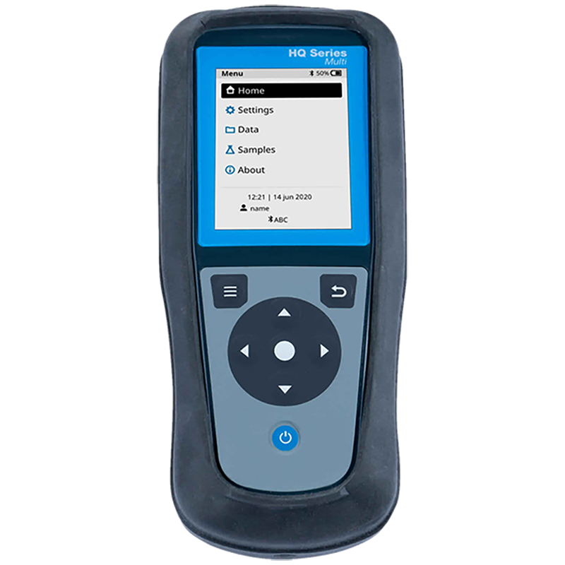

Hach HQ2100 Multiparametric Probe

| Hach HQ2100 Probe | |
|---|---|
| Location: | Lab. 1.87 Building 7 |
| Manager: | Margarida Ramires |
| Operator: | User |
| Working Principle: | Sensors |
| Manufacturer: | Hach |
| Model: | HQ2100 |
| Type: | Multiarametric Probe |
| Website: | Hach |
Hach HQ2100 Portable Multi-Meter, designed for the measurement of multiple water-quality parameters in laboratory and field applications. The instrument is compatible with Hach IntelliCAL smart probes, allowing the measurement of pH, conductivity, total dissolved solids (TDS), salinity, dissolved oxygen (DO), and oxidation-reduction potential (ORP), depending on the probe used.
The HQ2100 features a robust IP67-rated design, automatic probe recognition, and storage of calibration history and method settings. The instrument can store up to 10,000 data points and allows data transfer via USB, making it suitable for water-quality monitoring and field sampling campaigns.
Calendar / Availabillity
RequestMain Applications
- Water quality monitoring;
- Surface water analysis;
- River, lake, estuary, and coastal water monitoring;
- Physicochemical characterization of water bodies;
- Groundwater monitoring;
- Wastewater monitoring and characterization;
- Water treatment process monitoring;
- Environmental and aquatic ecosystem studies;
- Field sampling campaigns and on-site measurements;
- Laboratory measurement of physicochemical water parameters;
Sample Types
- Seawater;
- Estuarine water;
- Fresh water;
Main Advantages:
- Multiparameter platform for water-quality analysis;
- Compatibility with a wide range of IntelliCAL smart probes;
- Automatic recognition of connected probes;
- Storage of calibration history and method settings;
- Step-by-step guided calibration;
- Automatic temperature compensation;
- Storage capacity of up to 10,000 data points;
- USB data transfer and data logging;
- Robust IP67-rated housing;
- Portable design suitable for field applications;
- Features supporting Good Laboratory Practice (GLP);
- Clear on-screen error messages and measurement guidance;
Probes:
| Probe | State |
|---|---|
| Temperature | Installed |
| Condutivity | Installed |
| Salinity | Installed |
| Dissolved Oxygen (Optical) | Installed |
| pH | Installed |
| ORP (Redox Potential) | Installed |
| Total Dissolved Solids (TDS) | Not Installed |
Technical Specifications:
| Specification | Value |
|---|---|
| Manufacturer | Hach |
| Model | HQ2100 |
| Parameters | pH, conductivity, TDS, salinity, DO and ORP* |
| Inputs | 1 |
| pH Range | 0 - 14 pH |
| pH Resolution | 0.001 / 0.01 / 0.1 pH |
| Salinity | 0 - 42 ppt |
| DO | 0,1 - 20,0 mg/L; 1 - 200% saturation |
| Automatic Temperature Compensation | Yes |
| Temperature Range | -10 - 100 ºC |
| Internal Memory | 10 000 records |
| Data Logging | Yes |
| Calibration by User | Yes |